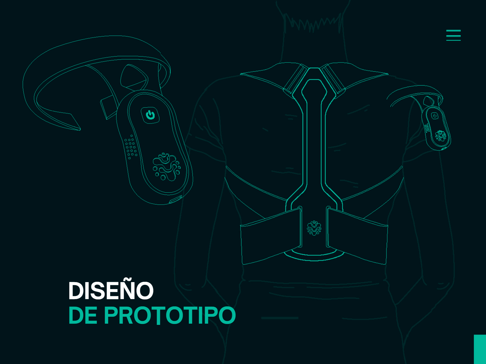

En esta semana, debido al tema de las lluvias, las clases se dieron de manera remota. Durante la sesión el profe se presentó, nos comentó que trabajaba como programar para el ministerio de cultura, así mismo nos dio la oportunidad para que cada uno de nosotros nos presentemos.
En lo que se refiere al contenido de la clase, nos dio un alcance general de que es lo que veríamos (Rúbrica del curso, contenidos, etc.), a su vez nos comentó algunos software y materilas que necesitaremos durante el curso, tales como: Visual studio, Alone App, Meshroom, Arduino IDE, "Chatarra electrónica", Kit Arduino según proyecto elegido, etc.
Luego nos comentó lo que tendríamos que hacer las primeras semanas (La bitácora,formar grupos de trabajo, presentar proyecto innovador, etc.), nos habló también acerca de las plantillas de página web que podríamos usar para la bitácora y las partes que estás contenían. Finalmente, nos habló y mostró videos sobre Ingeniería inversa Fotogrametría, Máquinas de control numérico CNC y por último algunos videos de ejemplos de proyectos innovadores para inspirarnos.
Respecto a la clase virtual conocimos las características de los proyectos innovadores y algunos de sus tipos como los tecnológicos, ambientales, etc. A su vez, el profe nos mencionó las características de una web, un blog y las ventajas de generar una bitácora, además de recordar con que se compone a una.
En esta semana tuvimos la primera clase presencial, por lo cual conocimos el aula, la cual es el Creative Space de Toulouse, y nos volvimos a presentar todos. Respecto a los temas de la clase, primero el profesor hablo acerca de los materiales que utilizaríamos durante el curso (Como el kit de Arduino) y nos dio consejos de cómo conseguirlos, posterior a eso nos mostró algunos equipos que contenía el aula, como las laptops, impresoras 3D, etc. Luego hablamos un poco acerca de las impresoras 3D y el profe nos mostró una impresiones que él realizó.
Finalmente, nos dio un acercamiento de las actividades que haríamos durante el curso, como la bitácora digital, el proyecto Innovador, la página del proyecto, un video sobre nuestro proceso, etc. Posteriormente, el profe nos indicó que formaros grupos de trabajo, yo formé un grupo de 6 integrantes. Los compañeros con los cuales me agrupe fueron Ricardo Echegaray, Christina Valderrama, Sandra Reyna, los cuales están en la carrera de DDP, así mismo nos juntamos con Abdiel Ramos, el cual estudia arquitectura de interiores y finalmente la última en integrarse al equipo fue Ericka Tuanama, la cual estudia CAM.
Durante la clase también el profe nos habló de forma general un poco acerca de la estructura CSS (En cargado de ver los estilos de la página), sobre JAVA SCRIPT (Encargado de generar mayor dinámica e interacción en los contenidos) y sobre el HTML (Elemento raíz para generar la web). Nos mostró a su vez como atreves de "Inspeccionar" en la web, podíamos editar los contenidos de cualquier página a la que entrabamos; sin embargo, estos cambios no se guardarían.
Finalmente, conocimos las partes más comunes que contienen las estructuras de las páginas.
Algunas de ellas son:
HEAD: La cabecera, donde usualmente se ubica el logo, iniciar sesión, la barra de búsqueda, el carrito de compra, etc.
EL BANNER O CARRUSEL: Usualmente se muestran fotografías estáticas u animadas, en estás suele estar cerca el botón de para el "Call 2 Action"
ENCABEZADOS: Los cuales se dividen por niveles, ya sea el primero, segundo y así sucesivamente.
FOOTER: Este es el pie de página donde normal mente colocan las redes o medios de contácto (Direcciones, teléfonos, etc).
En lo que se refiere a la clase virtual del sábado, seguimos viendo un poco más acerca de HTML, conocimos su anatomía y algunos de los atributos que posee. De manera grupal realizamos una actividad, la cual consistía en la identificación de elementos HTML en 10 páginas web diferentes. En mi grupo decidimos trabajar con la web de Starbucks, Cineplanet, Disney plus, Billabong, El Comercio, Gap, Nestlé, Autodesk, Adobe y finalmente con la web del colegio San Agustín.
En esta semana en la clase presencial aprendimos a editar la plantilla de la web, tanto la parte HTML como la de CSS, todo esto mediante el programa Visual Studio Code. Durante la clase fuimos creando y empezando a personalizar nuestra bitácora. Algunos alcances que no dio fue, por ejemplo, cómo subir una imagen, videos desde enlaces de YouTube, cómo cambiar los colores de la página, entre más cosas.
Nos enseñó también como con la Web Netlify podíamos publicar nuestra página una vez que esté terminada, también nos mostró como generar el QR de la misma. Además, nos mostró algunas etiquetas que podríamos implementar como atributos a la hora de diseñar nuestra web para optimizar el contenido.
Algunas de ellas son:
La "(b)": Para aplicar letra negrita
La "(u)": Para colocar subrayado
La "(i)": Para implementar cursiva
El "(Height y Width)" Para el ancho y alto de imágenes, videos, etc.
Algunos alcances extras que nos dio fue como mediante el navegador, usando, inspeccionar mediante un botón, podíamos seleccionar partes de la página web y de esta forma poder identificar fácilmente la línea y el del código HTML al cual pertenece para editarlo en Visual Code. También nos mostró como agregar imágenes y subir videos desde YouTube. Así mismo, durante la clase nos contó una anécdota paranormal que sufrió en Toulouse la clase anterior, debido a un percance que tuvo con las llaves del salón.
Debido a un problema personal que tuvo el profe, no pudimos tener clase virtual el día sábado.
Fue una semana muy productiva donde terminamos entendiendo un poco más acerca de las infarces y el lenguaje de programación web.
En esta semana en la clase presencial aprendimos sobre los dominios y los tipos de Hosting, así mismo recomendaciones de como implementar estos. También hablamos un poco más acerca del producto innovador y como manjear Google sites.
Conocimos algunas webs para adquirir dominios, entre ellas
En relación a los tipos de hosting conocimos los siguientes:
En esta semana hablamos un poco más sobre Google site, así mismo sobre el diagrama de flujo (Método de diseño centrado en el usuario para visualmente conocer cómo se mueve el usuario en la web o aplicación). Posterior a ello de manera grupal realizamos un Brain Storming para definir una idea para nuestro proyecto Innovador, así mismo una vez que el profesor acepto nuestro proyecto empezamos a realizar la presentación de diapositivas para la exposición de la idea, la cual sería en la clase virtual del sábado.
Una vez que la idea de nuestro proyecto fue aprovada estuvimos avanzando un poco con la presentación, y finalmente de manera personal cada integrante avanzo también su bitácora y el profe nos estuvo brindando ayuda resolviendo nuestras dudas.
En la clase virtual, el profe nos dio media hora para que por grupos nor organicemos, tras ello empezaron las exposiciones, siendo primera la de mi grupo con nuestro proyecto "Spinee", tras ello continuaron los demás grupos presentado sus trabajos hasta que finalmente culmino la sesión.
En base a nuestro proyecto
Problemática: LA MALA POSTURA
Objetivo sostenible: Salud y Bienestar, enfocado en fomentar una postura erguida para mejorar la salud de nuestros usuarios"
Solución: Corrector de Postura Inteligente con un sensor que podrá corregir en tiempo real la postura de los usuarios conectado inalámbricamente a sus dispositivos móviles para una medición periódica del proceso de corrección de conducta en mejora de la salud.

Sin más de está forma culmino el primer promedio junto a las primeras 5 semanas de clases.